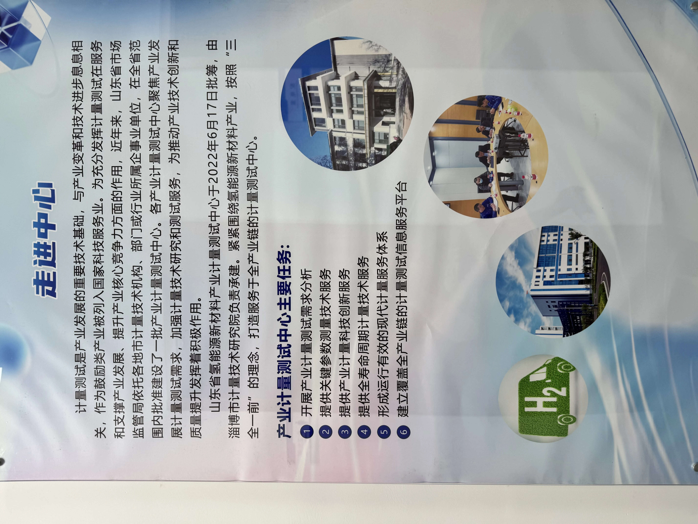
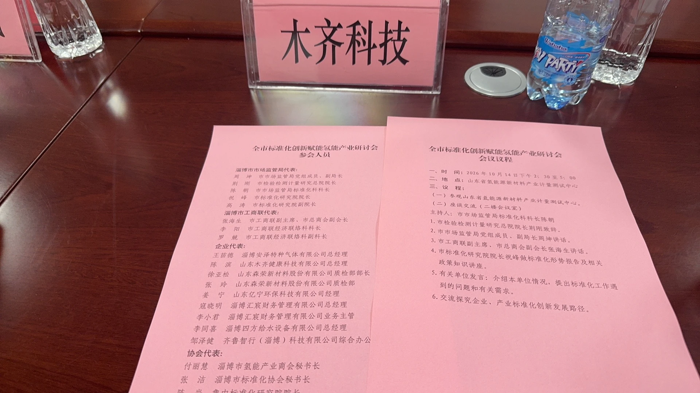
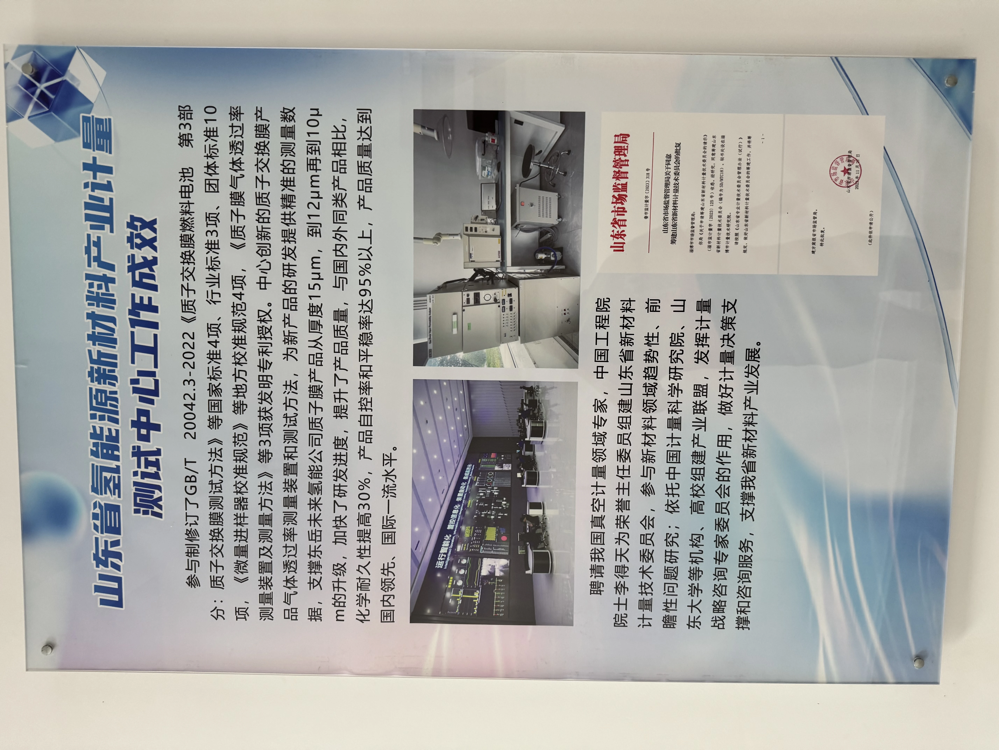

💡 Executive Summary & Strategic Context
On October 14, 2026, marking the 57th World Standards Day (Theme: "UN Sustainable Development Goal 7: Affordable and Clean Energy"), the "Hydrogen Industry Standardization & Quality Innovation Symposium" was convened in Zibo, organized jointly by the Zibo Administration for Market Regulation and the Municipal Federation of Industry and Commerce at the Shandong Hydrogen Energy New Materials Metrology and Testing Center.
As a Vice President unit of the Zibo Hydrogen Industry Chamber of Commerce and standing member of the National Technical Committee on Antimicrobial Surface Performance Standardization (SAC/TC621), MUQI Technology (MUQI Tech) joined key industrial peers including Anze Gas, Senrong New Materials, Yining Environmental, and Qilu Smart Transport. The symposium established vital technical roadmaps connecting high-precision public metrology, national standards revision for proton exchange membrane (PEM) electrolysis, and the industrial scaling of solid-state hydrogen materials.
Inside the Provincial Metrology Frontier: Live Symposium & Testing Facilities
Ultra-clear visual recap of the testing laboratories, calibration benches, and strategic dialogue sessions
Public Metrology Standards Synergy
Touring high-precision primary weight sets and critical gas chromatography analyzers, aligning solid-state micro-nano materials with certified provincial metrological traceability.
Proton Exchange Membrane Electrolysis Support
Providing empirical technical inputs into the national standard revision for PEM electrolysis systems, tackling parameter measurement from raw polymer membranes to system-level energy efficiency.
Scaling Solid-State Hydrogen into Daily Wellness
Adhering strictly to ambient physical saturation limits and sustained negative ORP (-300 to -600mV), driving automated mass production for medical dressings, hygiene textiles, and eco-appliances.
1. Stepping into the Metrology Frontier: Grounding Industrial Credibility in Hard Empirical Data
In modern manufacturing, "top-tier enterprises establish standards, second-tier build brands, and third-tier produce goods." In the rapidly burgeoning yet often noisy molecular hydrogen sector, public metrology infrastructure serves as the ultimate litmus test separating scientific reality from unfounded marketing claims.
Prior to the plenary symposium, delegates conducted an extensive on-site survey of the specialized laboratories within the Shandong Hydrogen Energy New Materials Metrology and Testing Center. In climate-controlled cleanrooms, high-precision standard weight arrays, trace-gas gas chromatographs, ultra-high-pressure cyclic gas test benches, and nanovolt electrochemical workstations operate under strict protocols. Center engineers demonstrated breakthrough methodologies supporting over 200 public metrology standards across gas purity, high-pressure flow measurement, and electrochemical degradation.

For MUQI Tech, scientific metrology is the foundational cornerstone governing every material batch:
- Differentiating Ambient Open Saturation from Pressurized Transient Peaks: While market marketing frequently promotes mathematically impossible claims exceeding tens of thousands of ppb in open cups, MUQI Tech adheres to Henry’s law of gas solubility, rigorously calibrating open-air effervescent dissolved hydrogen at the true physical saturation limit of 1,200 to 1,500 ppb;
- Continuous Oxidation-Reduction Potential (ORP) Benchmarking: Beyond momentary spike readings, MUQI tracks sustained negative potential (-300mV to -600mV) over extended dissolution curves via automated electrochemical dataloggers;
- Rigorous ICP-MS Heavy Metal & Biocompatibility Testing: Every material formulation undergoes inductively coupled plasma mass spectrometry to verify that dissolved mineral content strictly complies with global potable water and human skin contact standards.
2. Government-Industry-Academia Synergy: Empowering Hydrogen Supply Chains in Zibo and Beyond
The subsequent roundtable symposium convened regulatory leaders, research scholars, and industry executives for pragmatic discussions centered on "Standards Innovation, Quality Infrastructure, and Industrial Chain Resilience." The session was moderated by Chen Chao, Head of Standardization Division at Zibo Market Regulation Bureau, with welcoming remarks from Jing Gang, President of Zibo Inspection, Testing and Metrology Research Institute.

Key address speeches were delivered by Zhou Kun, Deputy Director of Zibo Market Regulation Bureau, and Zhang Haisheng, Vice Chairman of the Municipal Federation of Industry and Commerce. Both leaders underscored that hydrogen energy represents a strategic sunrise sector, reaffirming comprehensive policy backing for specialized enterprises to access national standardization channels. Following this, Zhu Feng, President of Zibo Standardization Research Institute, delivered an in-depth lecture detailing practical operational pathways for enterprises leading group, industrial, and national standard filings.

3. Technology Downstreaming & Ecosystem Synergy: From High-Tech Lab Science to Daily Wellness Realities
Hydrogen is not merely a high-altitude fuel for heavy-duty commercial transport, aerospace rockets, and mega-watt storage plants; it is equally a transformative molecule in preventive medicine, dermatology, and consumer health. Historically, however, conventional electrolysis hardware—encumbered by bulky transformers, power cords, and platinum electrode degradation—has constrained molecular hydrogen from reaching widespread consumer convenience.
Through relentless material science iteration, MUQI Tech has pioneered electricity-free solid-state hydrogen generation materials. During the symposium, MUQI's B2B industrialization roadmap garnered profound interest among attending authorities:
| Application Vertical | Standardized Technical Criteria | Industrial Application Scenario | "MUQI Inside" Value Proposition |
|---|---|---|---|
| Hydrogen-Infused Micro-Nano Membrane Nonwovens | 150cm industrial continuous roll; moisture-activated H₂ generation >30 mins; stable ambient shelf life | Class II medical cold-compress dressings, aesthetic post-laser repair masks, sanitary napkins for intimate microecology | Zero machinery modification on existing high-speed production lines; instant hydrogen upgrade for hygiene giants |
| Solid-State Hydrogen Mineral Ceramic Media | Ambient effervescent saturation of 1,200~1,500 ppb; ORP sustained at -300 to -500mV | Portable travel infusers, cold-brew tea packs, household fruit & vegetable antioxidant washing tablets | No cords, zero ozone/chlorine byproduct risk, 100% natural inorganic mineral formulation |
| Consumable Cartridges for Wellness Hardware | High-temperature endurance (80℃~100℃); continuous hydrogen release; food-contact safety compliance | Solid-state hydrogen facial steamers (capsule upgrade), smart foot-spa bath bubbling tablets | Transforms low-margin hardware manufacturing into an Amazon-proven "razor + razorblade" recurring consumable ecosystem |
By implementing the comprehensive "MUQI Inside" standard—from origin-level XRF elemental screening of raw minerals to precise microencapsulation under ICR (Intelligent Controlled Release) protocols—MUQI Tech translates empirical rigor into reliable, repeatable commercial value for global partners.
4. Frequently Asked Questions on Hydrogen Standardization (FAQ)
Q: Why does the hydrogen wellness industry urgently require unified metrological standards?
A: Molecular hydrogen (H₂) is the lightest and fastest-diffusing gas in the universe. Measuring its dissolved concentration in liquid and solid media is exceptionally sensitive to ambient temperature, barometric pressure, duration, and sensor calibration. In the past, market claims of tens of thousands of ppb in open cups severely eroded consumer trust. Formal public metrology standards restore data-backed integrity to the entire supply chain.
Q: What formal credentials qualify MUQI Tech to contribute to national standard committees?
A: MUQI Tech is an inaugural committee member of the National Technical Committee on Antimicrobial Surface Performance Standardization (SAC/TC621, mirrored to ISO/TC330), backed by dozens of invention patents and an 8,000-ton manufacturing capacity. In the hydrogen space, MUQI serves as Vice President unit of the Zibo Hydrogen Chamber, actively participating in joint metrology and standard formulation.
Q: What compliance documentation does MUQI Tech provide for global B2B clients?
A: MUQI Tech provides comprehensive third-party testing dossiers with every commercial batch, including ICP-MS heavy metal safety reports, verified dissolved hydrogen concentration curves, ORP electrochemical graphs, food-grade contact certifications, and corporate standard documentation to facilitate seamless regulatory clearance across Amazon, Walmart, and regional medical device authorities.